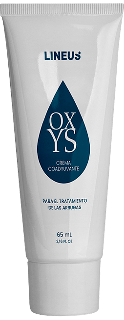

Cómo
lucir como si tuvieras 25 cuando tienes
40: receta eficaz y poco costosa de
juventud.
¡Hola a todos! Me llamo Tania, tengo 40
años y soy madre de siete hijos. ¡No bromeo!
La gente a menudo me pregunta si estoy
segura de mi edad. Y les contesto, “tan
segura como que estos son mis hijos”. Y si
importar lo que digan las malas lenguas, no
me hice ninguna operación de cirugía
plástica, lo prometo :-). El secreto para la
juventud es muy simple - ¡ser feliz,
proporcionar luz y amor al mundo, quererme a
mí misma y a mi familia!
Hablando de los cuidados, no utilizo cremas
costosas y no me fío mucho de los
esteticistas. Estoy bastante contenta con
mis propias pruebas de productos de belleza
- “” . Lo llevo
utilizando durante varios años y no lo
cambiaría por nada. ¿Por qué?, Permítame
decirle por qué :-)
Como la mayoría de las mujeres en los
30, las arrugas comenzaron a aparecer en mi
rostro, la piel perdió su elasticidad aunque
intentaba restaurar su frescura. Intenté
virtualmente todo lo que tenía a mano:
cremas, mascarillas, emulsiones - desde las
más costosas hasta las de supermercado. Y no
sentí demasiada diferencia entre ellas.
Después comencé a ir a los esteticistas.
Después de horas de masajes, peelings,
inyecciones, etc., noté resultados, pero
también me dí cuenta rápidamente que si no
lo dejaba ¡siempre dependería de estos
tratamientos!
Chicas, les voy a contar un secreto - la
industria de la belleza se basa solo en las
ganancias acumuladas en los salones de
belleza, y ¡no tiene nada que ver con
mantener su juventud! Cualquiera que haya
ido a la consulta de un “esteticista” sabe
que generalmente el tratamiento no se limita
a una visita. Le receta 20 tratamientos
diferentes de 10 sesiones cada uno, y además
le recomiendan que compre cosméticos muy
costosos para que use en casa. ¿Le suena
familiar? ¿Ve lo que quiero decir? ¡Son todo
mentiras! Hay un modo más fácil y sencillo
de mantenerse joven y se trata de encontrar
la crema perfecta ;)
Conocí la “” por
casualidad. Un día de invierno, llamé a una
amiga. Justo antes fui a dar un paseo y el
aire frío me peló bastante la cara. Le
pregunté si tenía una hidratante. Y como se
pueden imaginar, mi amiga me pasó la “” ))). Me enamoré de
ella casi de inmediato. Unos minutos después
suavizó la quemadura del frío y el viento en
mi piel. Parecía que estaba perfectamente
nutrida, suave y elástica. ¡Estaba
entusiasmada! :)
Yo no sé usted, pero estoy acostumbrada
a comprar online, es más rápido, fácil y, lo
más importante, siempre puede estar segura
de la calidad proporcionada directamente por
la tienda online del fabricante. Por tanto,
estoy muy contenta de haber descubierto que
puedo pedir la “”
desde mi hogar a través de su página web
oficial. ¡Y unos días más tarde, ya tengo el
paquete en mis manos!

Me gustó la crema desde el primer toque.
Pero en ese momento no era consciente de su
mayor característica. No solo es una excelente
hidratante y nutriente. También tiene un
notable efecto acumulativo. Día tras día, la
“” crea una piel cada
vez más joven, elástica e higiénica. Una sola
crema con múltiples beneficios: protege,
nutre, hidrata y suaviza las arrugas, elimina
la pigmentación e iguala la estructura de la
piel y además de todo eso ¡tiene un efecto
elevador! La “” sustituye docenas de botes
de mi tocador de belleza. ¡¡¡Todo en una!!!
:)))
Por supuesto, la magia no ocurre de la
noche al día - me llevó cerca de un mes
deshacerme de todas las señales de
envejecimiento. Ahora estoy muy contenta
cuando me miro al espejo, y además, ¡sin
ningún esteticista a mi lado! Prefiero
gastarme el dinero mimando a mis seres
queridos que dárselo a extraños :)
Bueno, ¡mis preciosas lectoras! Nunca
había hecho algo parecido, pero les recomiendo
firmemente que prueben al menos una vez la “” . Estoy segura que
igual que para mí, será amor a primera vista.
Es una absoluta innovación en el mundo del
cuidado de la piel, realmente restaura su
juventud y sustituye docenas de tratamientos
costosos. ¡Y el precio es una miseria!

Y por último, aquí os envío el valioso
enlace de la tienda online del fabricante :)
Si ha probado esta crema, ¡hablemos de ella!
¡Me encantará escuchar vuestros propios
resultados! :)
Hola Tania, llevo siguiendo su blog desde hace bastante tiempo. Me preguntaba qué tipo de productos para la piel usaba. ¡Gracias por la respuesta tan detallada!
Responder Eliminar¡Muy informativo, Tania! Estoy totalmente de acuerdo con lo que dices sobre los esteticistas.¡Solo quieren sacarte el dinero!
Responder Eliminar¡Tengo algo más que añadir! Llevo usando la “” durante mucho tiempo. ¡Debo llevar ya mi quinto tarro! Es una crema mágica, ¡nunca encontré nada mejor! Suaviza incluso las arrugas más profundas. Y sí, estoy totalmente de acuerdo, sustituye decenas de tratamientos costosos y productos de belleza innecesarios!
Eliminar¡Yo también la uso y me encanta! No es peor que cualquiera de los productos más lujosos y profesionales, pero menos costoso, ¡sin ninguna duda!
Responder EliminarHe oído hablar a menudo de esta crema, pero nunca encontré dónde comprarla. ¡Gracias por el enlace! Yo también suelo comprar online :)
Responder EliminarHe publicado a continuación el “antes” y el “después”. ¡Marca una tremenda diferencia en el rostro! ;-)!
Responder EliminarBuen producto. Solía comprarlo online pero se quedaron sin existencias y no pude encontrarlo de nuevo. No conocía la página oficial :) ¡Ciertamente voy a pedirlo otra vez!
Responder EliminarTania, ¡está preciosa! ¡Todavía no me creo la edad que tiene! ¡Parece que esta crema es realmente mágica!
Responder Eliminar¡¡Oh, la “” ¡ Me encanta! Parece como si no pasara el tiempo. MIs amigos incluso piensan que me he hecho la cirugía plástica. ¡Pero es esta crema!
Responder EliminarMaldita sea, porque no podía encontrar un buen producto para la piel. ¡Nada daba resultado y punto! Creo que debería probar la “”, oí muchos comentarios positivos. Chicas, sus fotos me ponen celosa. ¡Yo también quiero rejuvenecer!
Responder Eliminar¡Compré esta crema hace una semana! ¡Y ya puedo ver los efectos! La piel se volvió preciosa y bien limpias! ¡ Las líneas de expresión también se suavizaron!
Responder Eliminar¡Hola a todo el mundo! No he usado esa crema todavía pero mi madre sí y le encanta. No la importa que comparta sus fotos:
Responder Eliminar¡Fantástico! ¡¡¡La pediré con mi próximo salario!!!!
Responder Eliminar¡No está nada mal! Por supuesto, si la situación es seria y realmente se necesita la cirugía, no va poder sustituirla. Pero seguro que parecerá al menos 10 años más joven, eso seguro :) Probablemente no va a funcionar para las mujeres entre los 50-60, pero ayudará a las que tienen entre 30-40 para deshacerse de las primeras arrugas, ¡eso es lo que necesita! Mejora la turgencia de la piel, mejora la microcirculación y, lo más importante, sus ingredientes penetran en las capas más profundas de la dermis. Puedo asegurarlo como esteticista :)
Responder EliminarNo todos los esteticistas son unos inútiles)))) ¡Gracias por la información, chicas! ¡Me informaré mejor sobre ella!
Responder Eliminar¡Hola Tania! Como pidió, aquí está mi opinión. La crema es súper, no hay queja ninguna. No obstruye los poros ni causa alergias. Muestro una foto a continuación.
Responder Eliminar